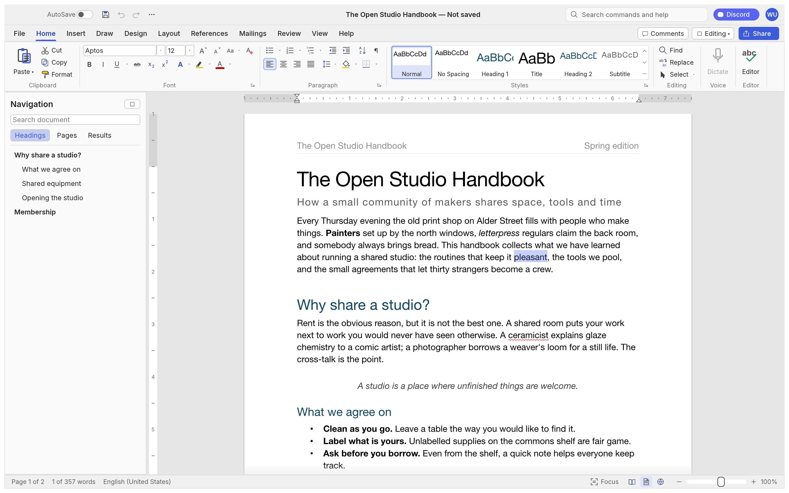

WordCraft
A free, open-source word processor that works like Microsoft Word - runs on your computer, no subscription, no account.
Open a document, format it with styles, tables and track changes the same way you would in Word, but without paying Microsoft $7-13 a month.

How does it work?
You need to write and format documents - styles, tables, track changes, references - but Word costs $7-13 a month and the free alternatives use a different interface.
You want to open a .docx file from a colleague, review it with tracked changes, update the table of contents, and send it back as a PDF.
You open WordCraft on your computer, or an AI agent opens it through its built-in command interface.
Double-click the app, or connect it to Claude Code - WordCraft has over 400 commands an agent can call.
Your document files: .docx, .odt, .rtf, .html, Markdown, LaTeX and plain text - including Word's own files with their formatting intact.
Open a .docx proposal from a client and keep the styles, headers and tracked changes.
It gives you a full Word-style workspace with a ribbon toolbar, styles, tables and review tools, all running locally.
- Format text with the ribbon: fonts, styles, headings, lists, the same shortcuts Word uses (Ctrl+B for bold, F4 to repeat)
- Build tables with merged cells, banded rows and sorting; add headers, footers, columns and page numbers
- Review with track changes, comments, spelling and grammar checking in 21 languages, and compare two documents side by side
- Save as .docx, PDF (with selectable text and bookmarks), .odt, .rtf, Markdown, LaTeX or plain text
The README demo: open the sample document, apply heading styles, insert a table of contents, and export to PDF.
A formatted document saved on your own computer, in the format you need.
- Formatted .docx filesA Word file you can hand back to a colleague - styles, tracked changes and comments preserved
- PDF exportsA finished PDF with selectable text, clickable links and bookmarks, ready to send
- No subscription billThe same ribbon-and-styles workflow Word charges $7-13/month for, running on your machine for free
What changes for me?
Without it
- Writing and formatting documents with styles, tables and tracked changes means paying Microsoft $7-13 a month - or learning a free tool that looks and works differently.
- Opening a colleague's .docx file with all its formatting means owning Word, or hoping a converter keeps everything intact.
With it
- The same ribbon-and-styles workflow, on your own computer, for free - with the keyboard shortcuts Word users already know.
- Open .docx files with formatting intact, review with tracked changes, and export to PDF or send back as .docx.
How hard is it to try?
Effort
- Download WordCraft for your computer (Mac, Windows or Linux) and install it.
- Launch a sample with
wordcraft --sampleand test the basics: apply a heading style, insert a table, and add a tracked change. - If you have a .docx file from Word, drag it in and check that styles, headers and tracked changes come through. Export it to PDF.
What it takes on your computer
- Space on disk
- About 86 MB (the Linux AppImage is 86.1 MB; Mac and Windows installers are in the same range). Source builds require Rust 1.90+.
- Memory while it runs
- No data found. Uses a GPU compositor (Metal, Vulkan or DirectX 12) and falls back to all CPU cores without a GPU. Re-layout of a 188-page document takes about 1.4 ms.
- Runs on
- Mac (universal - Apple silicon and Intel), Windows (x64, arm64, x86), Linux (x86_64, aarch64), FreeBSD (x86_64) and the web (via WebAssembly). Installers: DMG, MSI, AppImage, Flatpak, DEB, RPM.
Paste this into Claude Code. It runs your safety scan first, then a 10-minute test.
/skillspector https://github.com/storytold/wordcraft If that scan passes: download and install WordCraft, open a sample document with `wordcraft --sample`, apply heading styles, insert a table of contents, and export to PDF. 10 minutes max.
Should I?
Great if you...
- You know Word's ribbon-and-styles workflow and want a free alternative that works the same way - styles, tracked changes, the same shortcuts
- You want an AI agent to create and edit .docx files and PDFs through a command interface, without needing a Word license
Skip it if...
- You need a reliable word processor for contracts, CVs or client work today - this is in early alpha, and commenters report crashes and freezes
- You depend on .docx round-trip fidelity (charts, SmartArt, exact pagination) - those are not fully working yet
Instead, you could look at
- LibreOffice WriterThe established free word processor. More stable and complete, but a different interface - not a Word look-alike.
- OnlyOfficeA free office suite with a Word-style ribbon. Closer to Word's look, with better .docx fidelity than most free editors.
- Google DocsFree and browser-based. Handles basic .docx files, but needs an internet connection and stores documents in the cloud.
Is it safe?
- Security advisories: 0GitHub's advisory list, checked Oct 16
- Searches for CVEs, vulnerabilities, malware and scams10 results read, including the national CVE database: nothing found
- Are the stars earned?13.5K stars, 132 contributors, 735 commits. findarepo: looks organic (100/100)
Watch out for
- Early alpha - not ready for professional work. The Hacker News thread (101 points, 108 comments) includes reports of crashes on an M4 MacBook when changing text to a heading. One guide says: keep WordCraft for drafts, use a mature editor for a CV, a contract or a thesis.
- Another storytold pick after last week's five. WordCraft is the sixth ArtCraft/storytold tool in two weeks. That concentration reflects a real moment - Microsoft Office replacements launched alongside the Adobe ones - but one org's fate now affects a large share of recent editions.
- Built by a very small team using AI. Trendshift shows 2 contributors and 735 commits. The same pattern as PhotoCraft: one developer with a heavy AI assist. Long-term maintenance is an open question.
- .docx fidelity is untested on real-world files. The project's own beta requirements include testing against a corpus of real documents. Charts and SmartArt do not survive a round trip, and pagination does not yet match Word exactly.
Who's using it, and for what?
WordCraft went public on October 7, 2026. It is 9 days old and in alpha, so named real-world use is still very early.
We couldn't find anyone describing real use of it yet. That's normal for a brand-new repo, and it's worth knowing.
Who's talking about it
Sources
- WordCraft on GitHub (README, features, requirements), Oct 16
- WordCraft website and downloads, Oct 16
- WordCraft releases (v0.7.0, installer sizes), Oct 16
- Hacker News: WordCraft rebuilds Microsoft Word in pure Rust (101 points, 108 comments), Oct 12
- Nic's Notes: WordCraft (hands-on impressions), Oct 11
- findarepo: storytold/wordcraft (star check), Oct 16
- Trendshift: storytold/wordcraft (#1 daily in Rust), Oct 16